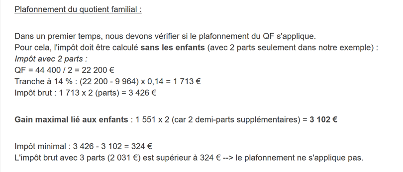
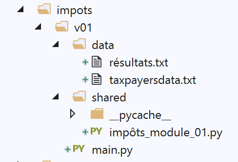

8. Exercício prático – versão 1
8.1. O problema

A tabela acima permite calcular o imposto no caso simplificado de um contribuinte que tenha apenas o seu salário para declarar. Tal como indicado na nota (1), o imposto assim calculado é o imposto antes de três mecanismos:
- o limite máximo do quociente familiar, que se aplica aos rendimentos elevados;
- o abatimento e a redução de impostos, que se aplicam aos rendimentos baixos;
Assim, o cálculo do imposto inclui as seguintes etapas [http://impotsurlerevenu.org/comprendre-le-calcul-de-l-impot/1217-calcul-de-l-impot-2019.php]:

Propõe-se escrever um programa que permita calcular o imposto de um contribuinte no caso simplificado de um contribuinte que tenha apenas o seu salário para declarar:
8.1.1. Cálculo do imposto bruto
O imposto bruto pode ser calculado da seguinte forma:
Primeiro, calcula-se o número de quotas do contribuinte:
- cada progenitor contribui com 1 quota;
- os dois primeiros filhos contribuem com 1/2 parte cada um;
- os filhos seguintes contribuem com uma parte cada:
O número de quotas é, portanto:
- nbParts=1+nbEnfants*0,5+(n.º de filhos-2)*0,5 se o trabalhador não for casado;
- nbParts = 2 + nbEnfants * 0,5 + (nbEnfants - 2) * 0,5 se for casado;
- onde nbEnfants é o número de filhos;
- calcula-se o rendimento tributável R = 0,9 * S, em que S é o salário anual;
- calcula-se o quociente familiar QF = R / nbParts;
- calcula-se o imposto bruto I com base nos seguintes dados (2019):
9964 | 0 | 0 |
27519 | 0,14 | 1394,96 |
73779 | 0,3 | 5798 |
156 244 | 0,4 | 13 913,69 |
0 | 0,45 | 20163,45 |
Cada linha tem 3 campos: champ1, champ2, champ3. Para calcular o imposto I, procura-se a primeira linha em que QF ≤ campo1 e utilizam-se os valores dessa linha. Por exemplo, para um trabalhador casado com dois filhos e um salário anual S de 50 000 euros:
Rendimento tributável: R = 0,9 * S = 45 000
Número de quotas: nbParts = 2 + 2 * 0,5 = 3
Quociente familiar: QF = 45 000 / 3 = 15 000
A primeira linha em que QF <= campo1 é a seguinte:
O imposto I é, então, igual a 0,14*R – 1394,96*nbParts=[0,14*45000-1394,96*3]=2115. O imposto é arredondado para o euro inferior.
Se a relação QF <= campo1 for verdadeira desde a 1.ª linha, então o imposto é nulo.
Se QF for tal que a relação QF <= campo1 nunca for verificada, então são utilizados os coeficientes da última linha. Neste caso:
o que dá o imposto bruto I = 0,45*R – 20 163,45*nbParts.
8.1.2. Limite máximo do quociente familiar

Para saber se o limite máximo do quociente familiar QF se aplica, refaz-se o cálculo do imposto bruto sem os filhos. Continuando com o exemplo do trabalhador casado com dois filhos e um salário anual S de 50 000 euros:
Rendimento tributável: R = 0,9 * S = 45 000
Número de quotas: nbParts=2 (já não se contabilizam os filhos)
Quociente familiar: QF = 45 000 / 2 = 22 500
A primeira linha em que QF <= campo1 é a seguinte:
O imposto I é, então, igual a 0,14*R – 1394,96*nbParts=[0,14*45000-1394,96*2]=3510.
Ganho máximo relacionado com os filhos: 1551 * 2 = 3102 euros
Imposto mínimo: 3510 – 3102 = 408 euros
O imposto bruto com 3 quotas, já calculado em 2115 euros, é superior ao imposto mínimo de 408 euros, pelo que o limite máximo familiar não se aplica neste caso.
De um modo geral, o imposto bruto é maior que (imposto1, imposto2), em que:
- [impôt1]: é o imposto bruto calculado com os filhos;
- [impôt2]: é o imposto bruto calculado sem os filhos e deduzido do benefício máximo (neste caso, 1551 euros por meia quota) relacionado com os filhos;
8.1.3. Cálculo da redução

Continuando com o exemplo do trabalhador casado, com dois filhos e um salário anual S de 50 000 euros:
O imposto bruto (2115) resultante da etapa anterior é inferior a 2627 euros para um casal (1595 euros para um solteiro): aplica-se, portanto, a redução. Esta é obtida através do seguinte cálculo:
redução = limiar (casal = 1 970 / solteiro = 1 196) – 0,75 * Imposto bruto
desconto = 1970 - 0,75 * 2115 = 383,75, arredondado para 384 euros.
Novo imposto bruto = 2115 - 384 = 1731 euros
8.1.4. Cálculo da redução fiscal

Abaixo de um determinado limiar, é aplicada uma redução de 20 % sobre o imposto bruto resultante dos cálculos anteriores. Em 2019, os limiares são os seguintes:
- solteiro: 21 037 euros;
- casal: 42 074 euros; (o valor de 37 968 utilizado no exemplo acima parece estar errado);
Este limiar é aumentado pelo valor: 3 797 * (número de meias-partes atribuídas pelos filhos).
Ainda no caso do trabalhador casado com dois filhos e um salário anual S de 50 000 euros:
- o seu rendimento tributável (45 000 euros) é inferior ao limiar (42 074 + 2 * 3 797) = 49 668 euros;
- tem, portanto, direito a uma redução de 20 % do seu imposto: 1731 * 0,2 = 346,2 euros, arredondado para 347 euros;
- o imposto bruto do contribuinte passa a ser: 1 731 – 347 = 1 384 euros;
8.1.5. Cálculo do imposto líquido
O nosso cálculo termina aqui: o imposto líquido a pagar será de 1384 euros. Na realidade, o contribuinte pode beneficiar de outras reduções, nomeadamente por doações a organismos de interesse público ou geral.
8.1.6. Caso dos rendimentos elevados
O nosso exemplo anterior corresponde à maioria dos casos de assalariados. No entanto, o cálculo do imposto é diferente no caso dos rendimentos elevados.
8.1.6.1. Limite máximo da redução de 10 % sobre os rendimentos anuais
Na maioria dos casos, o rendimento tributável é obtido através da fórmula: R = 0,9 * S, em que S é o salário anual. A isto chama-se a redução de 10 %. Esta redução está sujeita a um limite máximo. Em 2019:
- não pode ser superior a 12 502 euros;
- não pode ser inferior a 437 euros;
Consideremos o caso de um trabalhador solteiro, sem filhos, com um salário anual de 200 000 euros:
- a redução de 10 % é de 20 000 euros > 12 502 euros. É, portanto, reduzida para 12 502 euros;
8.1.6.2. Limite máximo do quociente familiar
Consideremos um caso em que se aplica o limite máximo familiar apresentado no parágrafo |Limite máximo do quociente familiar|. Tomemos o caso de um casal com três filhos e rendimentos anuais de 100 000 euros. Repassemos as etapas do cálculo:
- a dedução de 10 % corresponde a 10 000 euros < 12 502 euros. O rendimento tributável R é, portanto, 100 000 - 10 000 = 90 000 euros;
- o casal tem nbParts = 2 + 0,5 × 2 + 1 = 4 quotas;
- o seu quociente familiar é, portanto, QF = R / nbParts = 90 000 / 4 = 22 500 euros;
- o seu imposto bruto I1 com filhos é I1=0,14*90 000-1 394,96*4= 7 020 euros;
- o seu imposto bruto I2 sem filhos:
- QF = 90 000 / 2 = 45 000 euros;
- I2 = 0,3 × 90 000 − 5 798 × 2 = 15 404 euros;
- a regra do limite máximo do quociente familiar estipula que o benefício proporcionado pelos filhos não pode exceder (1551 × 4 meias-partes) = 6204 euros. Ora, neste caso, é I2-I1 = 15404 – 7020 = 8384 euros, ou seja, superior a 6204 euros;
- o imposto bruto é, portanto, recalculado como I3 = I2-6204 = 15 404 – 6 204 = 9 200 euros;
Este casal não terá qualquer abatimento nem redução e o seu imposto final será de 9200 euros.
8.1.7. Números oficiais
O cálculo do imposto é complexo. Ao longo do documento, os testes serão realizados com os exemplos seguintes. Os resultados são os do simulador da administração fiscal |https://www3.impots.gouv.fr/simulateur/calcul_impot/2019/simplifie/index.htm|:
Contribuinte | Resultados oficiais | Resultados do algoritmo do documento |
Casal com 2 filhos e rendimentos anuais de 55 555 euros | Imposto = 2815 euros Taxa de imposto = 14 % | Imposto = 2814 euros Taxa de imposto = 14 % |
Casal com 2 filhos e rendimentos anuais de 50 000 euros | Imposto = 1 385 euros Abatimento = 720 euros Redução = 0 euros Taxa de imposto = 14 % | Imposto = 1 384 euros Abatimento = 384 euros Redução = 347 euros Taxa de imposto = 14 % |
Casal com 3 filhos e rendimentos anuais de 50 000 euros | Imposto = 0 euros Desconto = 384 euros Redução = 346 euros Taxa de imposto = 14 % | Imposto = 0 euros desconto = 720 euros Redução = 0 euros Taxa de imposto = 14 % |
Solteiro, com 2 filhos e rendimentos anuais de 100 000 euros | Imposto = 19 884 euros Abatimento = 0 euros Redução = 0 euros Taxa de imposto = 41 % | Imposto = 19 884 euros Sobretaxa = 4 480 euros desconto = 0 euros Redução = 0 euros Taxa de imposto = 41 % |
Solteiro, com 3 filhos e rendimentos anuais de 100 000 euros | Imposto = 16 782 euros Abatimento = 0 euros Redução = 0 euros Taxa de imposto = 41 % | Imposto = 16 782 euros Sobretaxa = 7 176 euros desconto = 0 euros Redução = 0 euros Taxa de imposto = 41 % |
Casal com 3 filhos e rendimentos anuais de 100 000 euros | Imposto = 9 200 euros Abatimento = 0 euros Redução = 0 euros Taxa de imposto = 30 % | Imposto = 9 200 euros Sobretaxa = 2 180 euros desconto = 0 euros Redução = 0 euros Taxa de imposto = 30 % |
Casal com 5 filhos e rendimentos anuais de 100 000 euros | Imposto = 4 230 euros Abatimento = 0 euros Redução = 0 euros Taxa de imposto = 14 % | Imposto = 4 230 euros Desconto = 0 euros Redução = 0 euros Taxa de imposto = 14 % |
Solteiro, sem filhos e com rendimentos anuais de 100 000 euros | Imposto = 22 986 euros Abatimento = 0 euros Redução = 0 euros Taxa de imposto = 41 % | Imposto = 22 986 euros Sobretaxa = 0 euros Desconto = 0 euros Redução = 0 euros Taxa de imposto = 41 % |
Casal com 2 filhos e rendimentos anuais de 30 000 euros | Imposto = 0 euros Abatimento = 0 euros Redução = 0 euros Taxa de imposto = 0 % | Imposto = 0 euros Desconto = 0 euros Redução = 0 euros Taxa de imposto = 0 % |
Solteiro, sem filhos e com rendimentos anuais de 200 000 euros | Imposto = 64 211 euros Abatimento = 0 euros Redução = 0 euros Taxa de imposto = 45 % | Imposto = 64 210 euros Sobretaxa = 7 498 euros desconto = 0 euros Redução = 0 euros Taxa de imposto = 45 % |
Casal com 3 filhos e rendimentos anuais de 200 000 euros | Imposto = 42 843 euros Abatimento = 0 euros Redução = 0 euros Taxa de imposto = 41 % | Imposto = 42 842 euros Sobretaxa = 17 283 euros desconto = 0 euros Redução = 0 euros Taxa de imposto = 41 % |
No exemplo acima, denomina-se «sobretaxa» o montante adicional que os rendimentos mais elevados pagam devido a dois fenómenos:
- o limite máximo de 10 % na dedução sobre os rendimentos anuais;
- o limite máximo do quociente familiar;
Este indicador não pôde ser verificado, uma vez que o simulador da administração fiscal não o fornece.
Verifica-se que o algoritmo do documento apresenta sempre um imposto correto, embora com uma margem de erro de 1 euro. Esta margem de erro resulta dos arredondamentos. Todos os montantes são arredondados, por vezes para o euro superior, por vezes para o euro inferior. Como eu não conhecia as regras oficiais, os montantes do algoritmo do documento foram arredondados:
- para o euro superior no caso dos descontos e reduções;
- para o euro inferior no caso das sobretaxas e do imposto final;
Vamos desenvolver várias versões da aplicação de cálculo do imposto.
8.2. Versão 1

8.2.1. O script principal
Apresentamos um primeiro programa em que:
- os dados necessários para o cálculo do imposto estão codificados de forma estática no código, sob a forma de listas e constantes;
- os dados dos contribuintes (estado civil, filhos, salário) encontram-se num primeiro ficheiro de texto [taxpayersdata.txt];
- os resultados do cálculo do imposto (estado civil, filhos, salário, imposto) são guardados num segundo ficheiro de texto [résultats.txt];
O script [v-01/main.py] é o seguinte:
# módulos
import sys
from impots.v01.shared.impôts_module_01 import *
# main -----------------------
# constantes
# ficheiro dos contribuintes
DATA = "./data/taxpayersdata.txt"
# ficheiro de resultados
RESULTATS = "./data/résultats.txt"
try:
# leitura dos dados dos contribuintes
tax_payers = get_taxpayers_data(DATA)
# lista de resultados
results = []
# cálculo do imposto dos contribuintes
for tax_payer in tax_payers:
# o cálculo do imposto devolve um dicionário de chaves
# ['marié', 'enfants', 'salaire', 'impôt', 'surcôte', 'décôte', 'réduction', 'taux']
result = calcul_impôt(tax_payer['marié'], tax_payer['enfants'], tax_payer['salaire'])
# o dicionário é adicionado à lista de resultados
results.append(result)
# os resultados são guardados
record_results(RESULTATS, results)
except BaseException as erreur:
# podem ocorrer vários erros: ficheiro inexistente, conteúdo do ficheiro incorreto
# é exibido o erro e a aplicação é encerrada
print(f"l'erreur suivante s'est produite : {erreur}]\n")
sys.exit()
Notas
- linha 4: utiliza-se o módulo [impots.v01.modules.impôts_module_01]. Recorde-se que este caminho é medido a partir da raiz do projeto PyCharm;
- linha 10: o ficheiro [data/taxpayersdata.txt] é o seguinte:
Cada linha representa um tuplo de três elementos [marié / pacsé ou pas, nombre d'enfants, salaire annuel en euros].
- linha 12: o ficheiro onde serão colocados os resultados do cálculo do imposto para cada um dos contribuintes do ficheiro [taxpayersdata.txt]. Terá o seguinte conteúdo:
- linha 16: recuperam-se os dados dos contribuintes contidos em [taxpayersdata.txt]. Recupera-se uma lista de dicionários de chaves [marié, enfants, salaire], sendo que cada dicionário representa um contribuinte;
- linhas 17-25: calcula-se o imposto dos contribuintes da lista [taxPayers]. Recupera-se uma lista [results], em que cada elemento é, mais uma vez, um dicionário de chaves [marié, enfants, salaire, impôt, surcôte, décôte, réduction, taux];
- linha 27: a lista [results] dos resultados é gravada no ficheiro [résultats.txt] na forma apresentada acima;
- linhas 28-32: são interceptadas todas as exceções que possam ocorrer no módulo [impots.v01.modules.impôts_module_01];
Vamos agora detalhar as três funções utilizadas pelo script [main]:
- [get_taxpayers_data]: para ler os dados dos contribuintes;
- [calcul_impôt]: para calcular o imposto destes;
- [record_results]: para registar os resultados num ficheiro de texto;
Todas estas funções encontram-se no módulo [impots.modules.impôts_module_01].
8.2.2. O módulo [impots.v01.shared.impôts_module_01]
As funções necessárias para o cálculo do imposto foram reunidas no módulo [impots.v01.shared.impôts_module_01]:

- no [1]: definição das constantes do cálculo do imposto;
- no [2]: a lista de funções do módulo;
8.2.3. A função [get_taxpayers_data]
A função [get_taxpayers_data] é a seguinte:
# importações
import codecs
…
# leitura dos dados dos contribuintes
# ----------------------------------------
def get_taxpayers_data(taxpayers_filename: str) -> list:
# leitura dos dados dos contribuintes
file = None
try:
# lista de contribuintes
taxpayers = []
# abertura do ficheiro
file = codecs.open(taxpayers_filename, "r", "utf8")
# leitura da primeira linha do ficheiro dos contribuintes
ligne = file.readline().strip()
# enquanto restar uma linha a processar
while ligne != '':
# recuperam-se os 3 campos «casado», «filhos» e «salário» que compõem a linha
(marié, enfants, salaire) = ligne.split(",")
# adiciona-se à lista de contribuintes
taxpayers.append({'marié': marié.strip().lower(), 'enfants': int(enfants), 'salaire': int(salaire)})
# lê-se uma nova linha do ficheiro dos contribuintes
ligne = file.readline().strip()
# retorna-se o resultado
return taxpayers
finally:
# fecha-se o ficheiro, caso tenha sido aberto
if file:
file.close()
Notas
- linha 7: [taxpayers_filename] é o nome do ficheiro a processar. A função devolve uma lista;
- linhas 18-24: o ciclo de processamento das linhas [marié, enfants, salaire] do ficheiro de texto;
- linha 20: os três elementos da linha são recuperados. Presume-se aqui que a linha está sintaticamente correta, ou seja, que contém efetivamente os três elementos esperados;
- linha 22: constrói-se um dicionário com as chaves [marié, enfants, salaire] e esse dicionário é adicionado à lista [taxPayers];
- linha 26: uma vez processado o ficheiro, devolve-se a lista [taxPayers];
- linhas 10-30: note-se que não foi incluída a cláusula [catch] no [try] da linha 10. A cláusula [catch] não é obrigatória. Na linha 27, foi inserida uma cláusula [finally] para fechar o ficheiro de texto em todos os casos, haja ou não erro;
- esta estrutura try / finally permite que uma eventual exceção escape (não existe um catch). Esta exceção será encaminhada para o script principal [main], que irá parar e apresentar a exceção (ver parágrafo |O script principal|). Este mecanismo foi utilizado na maioria das funções do módulo;
8.2.4. A função [calcul_impôt]
A função [calcul_impôt] é a seguinte:
# importações
import codecs
import math
# faixas de imposto de 2019
limites = [9964, 27519, 73779, 156244, 0]
coeffr = [0, 0.14, 0.3, 0.41, 0.45]
coeffn = [0, 1394.96, 5798, 13913.69, 20163.45]
# constantes para o cálculo do imposto de 2019
PLAFOND_QF_DEMI_PART = 1551
PLAFOND_REVENUS_CELIBATAIRE_POUR_REDUCTION = 21037
PLAFOND_REVENUS_COUPLE_POUR_REDUCTION = 42074
VALEUR_REDUC_DEMI_PART = 3797
PLAFOND_DECOTE_CELIBATAIRE = 1196
PLAFOND_DECOTE_COUPLE = 1970
PLAFOND_IMPOT_COUPLE_POUR_DECOTE = 2627
PLAFOND_IMPOT_CELIBATAIRE_POUR_DECOTE = 1595
ABATTEMENT_DIXPOURCENT_MAX = 12502
ABATTEMENT_DIXPOURCENT_MIN = 437
…
# cálculo do imposto
# ----------------------------------------
def calcul_impôt(marié: str, enfants: int, salaire: int) -> dict:
# casado: sim, não
# filhos: número de filhos
# salário: salário anual
# limites, coeffr, coeffn: as tabelas de dados que permitem o cálculo do imposto
#
# cálculo do imposto com filhos
result1 = calcul_impôt_2(marié, enfants, salaire)
impot1 = result1["impôt"]
# cálculo do imposto sem filhos
if enfants != 0:
result2 = calcul_impôt_2(marié, 0, salaire)
impot2 = result2["impôt"]
# aplicação do limite máximo do quociente familiar
if enfants < 3:
# PLAFOND_QF_DEMI_PART euros para os dois primeiros filhos
impot2 = impot2 - enfants * PLAFOND_QF_DEMI_PART
else:
# PLAFOND_QF_DEMI_PART euros para os dois primeiros filhos, o dobro para os seguintes
impot2 = impot2 - 2 * PLAFOND_QF_DEMI_PART - (enfants - 2) * 2 * PLAFOND_QF_DEMI_PART
else:
impot2 = impot1
result2 = result1
# considera-se o imposto mais elevado, com a taxa e a sobretaxa correspondentes
if impot1 > impot2:
impot = impot1
taux = result1["taux"]
surcôte = result1["surcôte"]
else:
surcôte = impot2 - impot1 + result2["surcôte"]
impot = impot2
taux = result2["taux"]
# cálculo de uma eventual redução
décôte = get_décôte(marié, salaire, impot)
impot -= décôte
# cálculo de uma eventual redução de impostos
réduction = get_réduction(marié, salaire, enfants, impot)
impot -= réduction
# resultado
return {"marié": marié, "enfants": enfants, "salaire": salaire, "impôt": math.floor(impot), "surcôte": surcôte,
"décôte": décôte, "réduction": réduction, "taux": taux}
Notas
- linhas 6-8: as faixas de imposto (ver parágrafo |Cálculo do imposto bruto|);
- linhas 11-20: as constantes do cálculo do imposto;
- note-se que os elementos inicializados nas linhas 5-20 serão globais para as funções que iremos descrever. São, portanto, conhecidos enquanto a função que os utiliza não declarar variáveis com os mesmos nomes;
- os valores das linhas 5-20 mudam todos os anos. Aqui, são os valores de 2019;
- linha 25: a função [calcul_impôt] recebe três parâmetros:
- [marié]: sim/não, indica se o contribuinte é casado ou vive em união de facto;
- [enfants]: o número de filhos;
- [salaire]: o seu salário anual em euros;
- linhas 31-33: cálculo do imposto tendo em conta os filhos;
- linhas 34-47: estas linhas aplicam o limite máximo do quociente familiar (ver parágrafo |Limite máximo do quociente familiar|);
- linhas 49-57: estas linhas calculam a taxa de imposto do contribuinte, bem como uma eventual sobretaxa (ver parágrafo |Caso dos rendimentos elevados|);
- linhas 59-61: cálculo de uma eventual redução (ver parágrafo |Cálculo da redução|);
- linhas 62-64: cálculo de uma eventual redução do imposto a pagar (ver parágrafo |Cálculo da redução do imposto|);
O algoritmo é bastante complexo e não o iremos detalhar para além do que é indicado nos comentários. O algoritmo implementa o método de cálculo do imposto tal como descrito no parágrafo |O problema|.
8.2.5. A função [calcul_impôt_2]
A função [calcul_impôt] recorre à seguinte função [calcul_impôt_2]:
def calcul_impôt_2(marié: str, enfants: int, salaire: int) -> list:
# casado: sim, não
# filhos: número de filhos
# salário: salário anual
# limites, coeffr, coeffn: as tabelas de dados que permitem o cálculo do imposto
#
# número de quotas
marié = marié.strip().lower()
if marié == "oui":
nb_parts = enfants / 2 + 2
else:
nb_parts = enfants / 2 + 1
# 1 quota por filho a partir do terceiro
if enfants >= 3:
# meia quota adicional por cada filho a partir do terceiro
nb_parts += 0.5 * (enfants - 2)
# rendimento tributável
revenu_imposable = get_revenu_imposable(salaire)
# sobretaxa
surcôte = math.floor(revenu_imposable - 0.9 * salaire)
# para problemas de arredondamento
if surcôte < 0:
surcôte = 0
# quociente familiar
quotient = revenu_imposable / nb_parts
# é colocado no final da tabela de limites para interromper o ciclo que se segue
limites[len(limites) - 1] = quotient
# cálculo do imposto
i = 0
while quotient > limites[i]:
i += 1
# uma vez que o quociente familiar foi colocado no final da tabela de limites, o ciclo anterior
# não pode ultrapassar os limites da tabela
# agora é possível calcular o imposto
impôt = math.floor(revenu_imposable * coeffr[i] - nb_parts * coeffn[i])
# resultado
return {"impôt": impôt, "surcôte": surcôte, "taux": coeffr[i]}
Este algoritmo foi descrito no parágrafo 8.1.1.
8.2.6. A função [get_décôte]
A função [get_décôte] implementa o cálculo do eventual abatimento do imposto (parágrafo |Cálculo do abatimento|):
# calcula uma eventual redução
def get_décôte(marié: str, salaire: int, impots: int) -> int:
# inicialmente, um desconto nulo
décôte = 0
# montante máximo do imposto para beneficiar da redução
plafond_impôt_pour_décôte = PLAFOND_IMPOT_COUPLE_POUR_DECOTE if marié == "oui" else PLAFOND_IMPOT_CELIBATAIRE_POUR_DECOTE
if impots < plafond_impôt_pour_décôte:
# montante máximo da redução
plafond_décôte = PLAFOND_DECOTE_COUPLE if marié == "oui" else PLAFOND_DECOTE_CELIBATAIRE
# abatimento teórico
décôte = plafond_décôte - 0.75 * impots
# a dedução não pode exceder o montante do imposto
if décôte > impots:
décôte = impots
# não há dedução <0
if décôte < 0:
décôte = 0
# resultado
return math.ceil(décôte)
8.2.7. A função [get_réduction]
A função [get_réduction] implementa o cálculo da eventual redução do imposto a pagar (parágrafo |Cálculo da redução do imposto|):
# calcula uma eventual redução
def get_réduction(marié: str, salaire: int, enfants: int, impots: int) -> int:
# o limite máximo de rendimentos para ter direito à redução de 20%
plafond_revenu_pour_réduction = PLAFOND_REVENUS_COUPLE_POUR_REDUCTION if marié == "oui" else PLAFOND_REVENUS_CELIBATAIRE_POUR_REDUCTION
plafond_revenu_pour_réduction += enfants * VALEUR_REDUC_DEMI_PART
if enfants > 2:
plafond_revenu_pour_réduction += (enfants - 2) * VALEUR_REDUC_DEMI_PART
# rendimento tributável
revenu_imposable = get_revenu_imposable(salaire)
# redução
réduction = 0
if revenu_imposable < plafond_revenu_pour_réduction:
# redução de 20%
réduction = 0.2 * impots
# resultado
return math.ceil(réduction)
8.2.8. A função [get_revenu_imposable]
A função [get_revenu_imposable] calcula o rendimento tributável a partir do salário anual:
# revenu_imposable = salaireAnnuel - dedução
# a dedução tem um valor mínimo e um valor máximo
# ----------------------------------------
def get_revenu_imposable(salaire: int) -> int:
# abatimento de 10% do salário
abattement = 0.1 * salaire
# esta dedução não pode exceder ABATTEMENT_DIXPOURCENT_MAX
if abattement > ABATTEMENT_DIXPOURCENT_MAX:
abattement = ABATTEMENT_DIXPOURCENT_MAX
# a dedução não pode ser inferior a ABATTEMENT_DIXPOURCENT_MIN
if abattement < ABATTEMENT_DIXPOURCENT_MIN:
abattement = ABATTEMENT_DIXPOURCENT_MIN
# rendimento tributável
revenu_imposable = salaire - abattement
# resultado
return math.floor(revenu_imposable)
8.2.9. A função [record_results]
A função [record_results] grava os resultados do cálculo do imposto num ficheiro de texto:
# gravação dos resultados num ficheiro de texto
# ----------------------------------------
def record_results(results_filename: str, results: list):
# results_filename: o nome do ficheiro de texto onde colocar os resultados
# results: a lista de resultados na forma de uma lista de dicionários
# cada dicionário é gravado numa linha de texto
résultats = None
try:
# abertura do ficheiro de resultados
résultats = codecs.open(results_filename, "w", "utf8")
# análise dos contribuintes
for result in results:
# o resultado é registado no ficheiro de resultados
résultats.write(f"{result}\n")
# próximo contribuinte
finally:
# fecha-se o ficheiro, caso tenha sido aberto
if résultats:
résultats.close()
8.2.10. Os resultados
Como já foi referido, com o ficheiro de contribuintes [taxpayersdata.txt] seguinte:
o script [main.py] cria o seguinte ficheiro [résultats.txt]:
Estes resultados estão em conformidade com os números oficiais do parágrafo |Números oficiais|.
Agora, vamos executar esta versão numa janela de consola:
(venv) C:\Data\st-2020\dev\python\cours-2020\python3-flask-2020\impots\v01>python main.py
Traceback (most recent call last):
File "main.py", line 4, in <module>
from impots.v01.shared.impôts_module_01 import *
ModuleNotFoundError: No module named 'impots'
Encontramos um erro já conhecido: aquele em que um módulo não é encontrado, neste caso, o módulo [impots]. Recorde-se que isto significa que:
- o interpretador Python percorreu, uma a uma, as pastas do Python Path;
- em nenhuma delas encontrou uma pasta que contivesse um script [impots.py];
A versão [v02] trará uma solução para este problema.